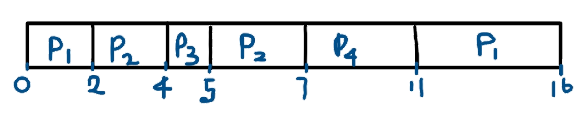

SHORTEST REMAINING TIME FIRST ALGORITHM
The Shortest Remaining Job First (SRJF) is the preemptive version of SJF scheduling. In this scheduling algorithm, the process with the smallest amount of time remaining until completion is selected to execute. Processes having same arrival time will convert SRTF to SJF.
Shortest Remaining Time First (SRTF)
➢It can be actually implementable in the system because it is not depending on the burst time.
➢It doesn't suffer from the problem of starvation or convoy effect.
➢All the jobs get a fare allocation of CPU.
Suppose there are three processes in a queue: P1, P2 and P3.All these three processes are sorted according to
arrival time then process with lowest arrival time will get executed first.For later processes burst time will
be sorted and the process with lowest burst time and with arrival time less than completion time of previous
process will be given the CPU first.
EXAMPLE OF SRTF
| PROCESS | ARRIVAL TIME | BURST TIME |
|---|---|---|
| P1 | 0.0 | 7 |
| P2 | 2.0 | 4 |
| P3 | 4.0 | 1 |
| P4 | 5.0 | 4 |
The Gantt Chart of the given example is:

P1 = (11-2-0)
=9
P2= (5-2-2)
=1
P3 = (4-4)
=0
P4 = (7-5)
=2
Average Waiting time
(9+1+0+2)/4
=3